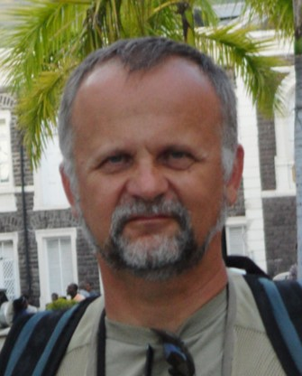

Expert data scientist and programmer with extensive experience analyzing and visualizing complex environmental data.
Particular expertise applying extensive knowledge of earth and ocean environments to solve and map complex data scenarios.
Strong statistical analysis including machine learning, programming, and research skills resulting in multiple publications
in peer-review journals, book chapters and technical reports.
KEY COMPETENCIES:
- Statistical Analysis / Research
- Machine Learning
- Python / R / MATLAB / Visual Basic / C++ / SQL
- ArcGIS / Satellite and Aerial Imagery
- Web Tools / HTML / Data Visualization
- Spatial / Time Series Analysis
- Scientific / Technical Collaboration
- Technical Writing / Reporting / Publishing